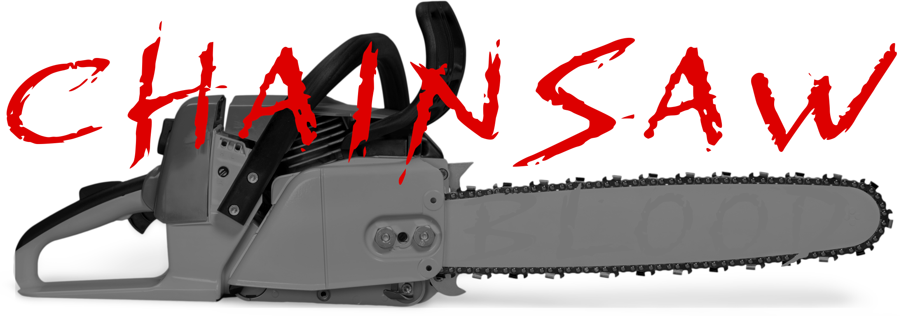
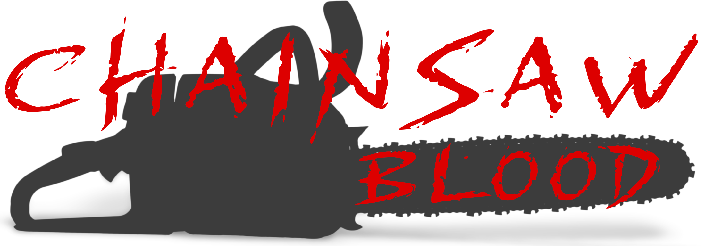
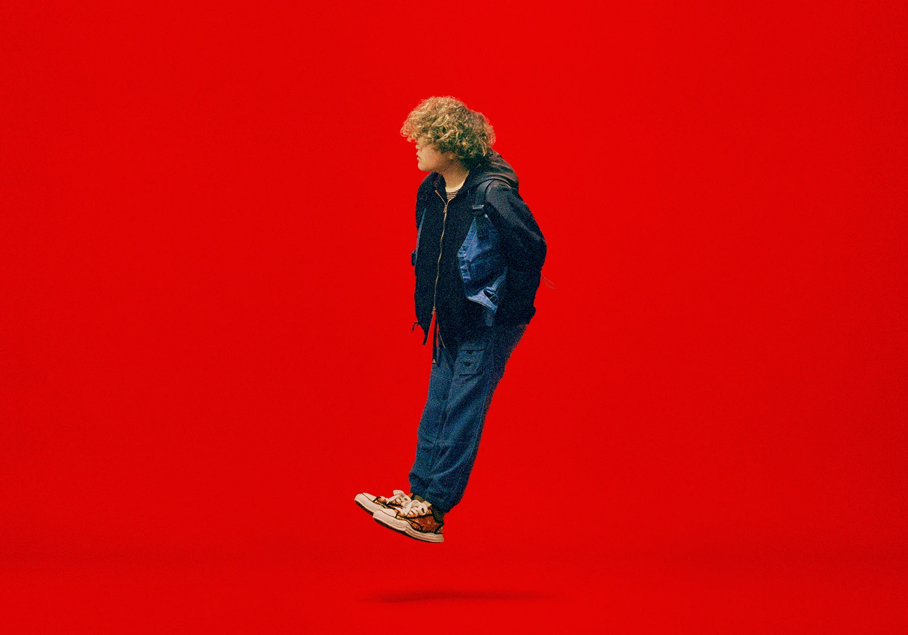

Vaundy
Musician
9月19日、『チェンソーマン』主題歌に関するニュースがアニメ・漫画・音楽ファンを中心にネットを騒然とさせた。オープニングテーマ 米津玄師（共同編曲に常田大希）挿入歌 マキシマム ザ ホルモンそして全12話 週替わりエンディングこれだけで度肝を抜かれたが、その12組の豪華さかつ作品イメージとの素晴らしい合致。しかもEDが流れるその瞬間まで、誰の曲がかかるのかわからない仕掛け。そんな大注目の第1話のエンディングは、Vaundyの「CHAINSAW BLOOD」だった。
Vaundyはアニソンへの思い入れも強い。自身初のアニソンである「裸の勇者」のインタビューでは、アニメが創作のルーツのひとつであること、アニソンを手掛けることへの喜びを存分に語っていた。そんなVaundyが「大好きな作品」と公言する『チェンソーマン』のEDを作る。もうこちらの期待値は爆上がりだ。発表直後の感想「曲名が作品に尽くしすぎていて面白い」楽曲を聴いた直後の感想「Vaundyのかっこよさの進化が止まらない」今までも「泣き地蔵」「soramimi」「HERO」など巧みで攻めたサウンド世に送り出してきたが、さらに飛躍させてきた。
まさしくこの作品のためだけに作られた、渾身の1曲。アニメ主題歌に大物ミュージシャンが抜擢されることが増えたが、楽曲はストーリーに寄り添いながらアーティストの曲単体としても成立しているものが多い。つまり、アニメを見ていない人が聴いても十分楽しめるということだ。ただ、「CHAINSAW BLOOD」に関してはそのラインをちょっと超えていった。もちろんVaundyの曲としても申し分ない完成度だが、本人も言っているように作品に尽くしまくっている。冒頭で轟くチェンソー。そのチェンソーの余韻をそのままに、絶えることなく鳴らされるギター。吐き捨てるように"BLOOD"と歌う痛快さ。2Bメロでの一瞬の静けさで前に出るベースが痺れる。3分半、作品世界に没入できる楽曲、爆誕。第1話での、デンジがチェンソーマンになりゾンビをぶった斬っていくシーン。飛び散る血飛沫の中で狂気じみた高笑いをする主人公にぴったりな曲が生まれてしまった。ライブで足を踏みしめながら、頭を振り乱しながら歌うVaundyが想像できる。
On September 19th, news about the theme song for "Chainsaw Man" created a buzz online, particularly among anime, manga, and music fans. The opening theme is by Kenshi Yonezu (co-arranged by Daiki Tsuneta), the insert song is by Maximum the Hormone, and there are weekly rotating ending songs for all 12 episodes. This lineup alone surprised many, but what truly amazed fans was the luxuriousness of the 12 featured artists and how well their works matched the image of the series. Furthermore, until the moment the ending started playing, viewers had no idea whose song would be featured, adding to the anticipation. The highly anticipated ending of the first episode featured Vaundy's "CHAINSAW BLOOD."
Vaundy has a strong passion for anime songs. In an interview for his first anime song, "Naked Hero," he expressed his joy in contributing to anime music and acknowledged that anime is one of the roots of his creativity. Despite being his first venture into anime songs, Vaundy enthusiastically shared his love for the creative process. Now, Vaundy, who openly declares "Chainsaw Man" as a "beloved work," is creating the ending theme for the series. Expectations are already skyrocketing. Immediate reactions after the announcement included comments like "the song title perfectly captures the essence of the work and is amusing," and after listening to the music, fans remarked, "Vaundy's coolness keeps evolving." While Vaundy has previously released skillfully crafted and innovative songs like "Naki Jizo," "Soramimi," and "HERO," he continues to push the boundaries and make even greater leaps in his musical evolution.
This is truly a song created exclusively for this work, a song poured with all one's efforts. While it has become more common for prominent musicians to be selected for anime theme songs, many of the songs are not only closely tied to the story but also stand alone as individual pieces by the artists. In other words, even people who haven't watched the anime can enjoy them sufficiently. However, when it comes to "CHAINSAW BLOOD," it goes a little beyond that line. Of course, it is a song by Vaundy with impeccable completeness, but as he himself mentions, he poured himself into the work.
At the beginning, the roaring chainsaw. The guitar continues to resonate without interruption, carrying the lingering feeling of the chainsaw. The exhilarating singing of "BLOOD" as if spat out. The bass that comes forward with a momentary calmness in the 2nd beat melody is thrilling. A 3-minute and 30-second song that allows you to immerse yourself in the world of the work, explosively born.
In the first episode, there is a scene where Denji becomes Chainsaw Man and ruthlessly slashes through zombies. The perfect song is born for the protagonist who laughs maniacally amid splattering blood. You can imagine Vaundy performing live, stomping his feet and shaking his head while singing.